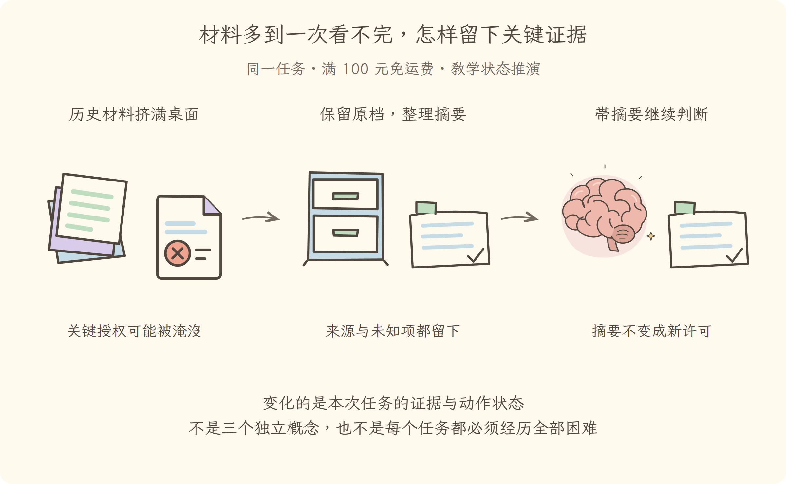

学习导航
第09讲 · 材料多到一次看不完，怎样留下关键证据
源码基线：cd5ef8148158c3a752a658978873241fdf8e2bbc。业务案例为虚构 Java 运费服务；图与流程是教学推演，源码事实另有固定证据。
从这里接上
日志不断增长，失败与授权可能淹没在历史里。本讲要回答：材料多到一次看不完，怎样留下关键证据？
上一讲解决了“恢复记录后检查当前文件，不把恢复等同于重执行”；这仍不能代替本讲要补的责任。
阅读与完成标准
先看逐步讲解，再做练习。视觉课件用于复习，词典随用随查，不要求先背英文。预计正文阅读 20–35 分钟，练习 10–20 分钟；这是安排建议，不是学会的证明。
读完应能解释：压缩时只留下一个成功结果，删掉对应调用可以吗？ 还要能预测：摘要说已授权，而可信执行状态没有许可，应该听谁？ 最后从源码证据定位相应责任。
现在必须懂的是本讲怎样改变证据或动作状态；具体框架中的其他选项知道存在即可，不用一次读完整个包。语法卡住可查补课 A、补课 B，工程定位查补课 C，看完返回此处即可。
本讲交接
保留可追溯摘要、关键边界和工具调用结果配对。但下一步还要解决：一个查契约，一个查实现，结果怎样合回来。
← 第08讲：中断恢复 · 第10讲：分工与后台 →
视觉课件
第09讲 · 材料多到一次看不完，怎样留下关键证据
源码基线：cd5ef8148158c3a752a658978873241fdf8e2bbc。业务案例为虚构 Java 运费服务；图与流程是教学推演，源码事实另有固定证据。
当前现场
日志不断增长，失败与授权可能淹没在历史里。固定业务约定不变：满 10000 分免运费；原实现在等于时返回 800。禁止用修改预期的方式让测试变绿。

三分钟复述
先描述左格缺什么，再说明中格采取的机制，最后指出右格新增了哪些证据或责任。保留可追溯摘要、关键边界和工具调用结果配对。不要只读图上的物件名；删掉中间这项机制，任务会在哪一步失去依据？
本讲最容易误会的是：摘要说已授权，而可信执行状态没有许可，应该听谁？ 执行器不能把摘要当新权限。回查可信授权；摘要用于理解，不授予动作能力。
从图返回源码
图只表达教学关联与状态变化，不代替完整调用顺序。源码定位提供实现或契约证据，正文解释映射和边界。
← 第08讲：中断恢复 · 第10讲：分工与后台 →
逐步讲解
第09讲 · 材料多到一次看不完，怎样留下关键证据
源码基线：cd5ef8148158c3a752a658978873241fdf8e2bbc。业务案例为虚构 Java 运费服务；图与流程是教学推演，源码事实另有固定证据。
一、把所有历史塞进去，不等于让模型记得更好
第八讲恢复后，运费任务的记录已经包含旧报告、源码、失败尝试和用户更正。再加入长测试日志，一次请求可能装不下全部材料。Context Window（上下文窗口）是一次模型交互可容纳材料的范围；Token（文本计量单位）用于估算这些材料占多少容量，不能直接等同于汉字个数。
问题不是把记录簿扔掉，而是为下一次判断准备一份合适的工作材料。就像值班交接时保留完整档案，同时在桌面放一张带出处的摘要卡。
三格为同一运费任务的教学状态变化或故障对照。图不是实际运行日志；关键区别见各格说明。
二、摘要必须保留能改变动作的事实
本例中，不应该丢掉：满 10000 分免运费的约定；实际收了 800 分的失败报告；当前代码版本与比较符号；修改授权的范围；尚未测试或测试针对旧版本的状态。
可以压缩重复日志，却不能把“用户只允许排查”压成“处理完即可”，也不能把“旧版本测试通过”压成“所有测试通过”。这两种看似更短的摘要都会改变后续动作，属于失真，而不是节省容量。
Compaction（上下文压缩）在这里是用较短的模型可见材料替换一段历史视图，原始事件仍保留。它不是对原始日志随意删行，也不是保证无损的文件压缩算法。
三、工具请求与结果为什么不能从中间剪开
以下是固定提交中的定位片段（仅显示这一段前至多 20 行，不是完整函数）：
/**
* Forcibly compact a range of surface nodes into a single summary node.
* `start` and `end` name an inclusive span by surface position, not numeric seq
* order; replacements can make visible seqs non-monotonic. Both edges must be
* balanced so assistant tool calls remain paired with their results. A model-
* backed implementation forwards cancellation and rejects active, missing,
* reversed, or unbalanced ranges. The target session is `agent.session`.
* Its replacement user message must use {@link compactCheckpointSource} with
* the transaction's `CompactionId`.
* Use {@link toolPairingBalancedBefore} and {@link toolPairingBalancedAfter}
* for the edge checks.
*
* @param start - first surface seq, inclusive.
* @param end - last surface seq, inclusive.
* @param agent - context whose session is mutated and whose routing options guide summarization.
* @param signal - optional cancellation; model-backed implementations must forward it.
* @throws when compaction is active or the range is missing, reversed, or unbalanced.
* @returns the appended event seqs, summary, replaced range, and token accounting.
*/
abstract compactRegion(
接口明确要求压缩范围按消息投影位置选择，而不是简单按事件编号大小截断；边界必须平衡，不能留下工具结果却丢掉其调用，或留下调用却把结果剪掉。压缩后的摘要也要携带对应事务标识。
想象接班记录只剩“成功”，却不知道成功的是读取报告、编辑代码还是测试。调用与结果配对，就是让结果仍有归属。它不是形式洁癖，而是避免模型和读者将某个成功错误归给别的动作。
基础压缩后端 使用计量能力和模型相关配置，并挂到请求前等扩展点。服务声明规定契约，具体后端实现策略；不要把接口本身说成已经完成摘要生成。
四、什么情况压缩也救不了
如果当前必须保留的一份材料本身就超过窗口，或者工具目录和请求外层已经太大，只压旧历史不一定够。此时需要更精确地读取范围、筛选相关内容，或明确说明还缺哪些材料。
摘要还可能错。对足以改变权限、补丁或验收的事实，应保留出处并允许回读原记录；执行器也不应因为一张摘要卡写着“已授权”就跳过自己的权限状态。本书的反例测试会故意伪造这句话，确认它不能产生写许可。
五、用本例检验一张摘要卡
一份合格的教学摘要可以写：“测试 10000→0 实际得 800；约定含等于；当前实现严格大于；只获准排查；尚未修改和重测。证据见对应报告和源码读取结果。”
看起来不华丽，但它保住了下一步选择所需的信息。若已经获得修改授权，应写清范围而非泛化成“用户同意所有操作”。若测试在旧版本运行，也必须保留版本关系。
六、材料分得开，任务也可以分开吗
压缩解决一次请求的容量，不直接解决多模块阅读的耗时。假设业务约定、运费实现和调用链分散在不同模块，第十讲会把独立证据任务分给帮手，再由主助手合并，而不是期待更长上下文自动解决所有复杂度。
← 第08讲：中断恢复 · 第10讲：分工与后台 →
练习与答案
第09讲 · 材料多到一次看不完，怎样留下关键证据
源码基线：cd5ef8148158c3a752a658978873241fdf8e2bbc。业务案例为虚构 Java 运费服务；图与流程是教学推演，源码事实另有固定证据。
先作答，再展开
1. 解释机制
压缩时只留下一个成功结果，删掉对应调用可以吗？
查看解释与边界
不可以。失去调用身份会无法判断成功属于什么动作，范围必须保持工具调用结果配对。 回到本例的 10000 分输入，把“想做”“做过”“有结果”分别说清。
2. 预测反例
摘要说已授权，而可信执行状态没有许可，应该听谁？
查看推演
执行器不能把摘要当新权限。回查可信授权；摘要用于理解，不授予动作能力。 不是所有停止都叫完成，不是所有模型可见文字都有权限。
3. 源码与图相互校验
打开本讲定位，找到正文强调的分支或契约。遮住图中文字，解释左、中、右三格分别表示什么；指出图省略了哪一项实现细节。
参考核对方式
源码应支持本讲讲解的机制，而不是声称原仓库有运费业务。左格是“日志不断增长，失败与授权可能淹没在历史里”，右格是“保留可追溯摘要、关键边界和工具调用结果配对”。图中物件不是对象类的完整结构，也没有证明真实工具已执行；按正文的失败边界解释即可。若图无法表达这个区别，应修改图，不是给它增加一段英文标签。
← 第08讲：中断恢复 · 第10讲：分工与后台 →
分享稿
第09讲 · 材料多到一次看不完，怎样留下关键证据
源码基线：cd5ef8148158c3a752a658978873241fdf8e2bbc。业务案例为虚构 Java 运费服务；图与流程是教学推演，源码事实另有固定证据。
用自己的话讲给同事
我们还在查同一个 Java 运费问题：满 100 元应免运费，恰好边界却收了 8 元。走到本讲，已有条件是：日志不断增长，失败与授权可能淹没在历史里。
如果不补这一层，会遇到的问题是：压缩时只留下一个成功结果，删掉对应调用可以吗？ 不可以。失去调用身份会无法判断成功属于什么动作，范围必须保持工具调用结果配对。 所以本讲新增的不是要背的名词，而是任务中一项明确的责任。
现在能做到：保留可追溯摘要、关键边界和工具调用结果配对。但还要守住反例：摘要说已授权，而可信执行状态没有许可，应该听谁？ 执行器不能把摘要当新权限。回查可信授权；摘要用于理解，不授予动作能力。
请结合本讲图说出变化，再指向源码；不要宣称这段教学推演就是实际模型日志。下一讲顺着“一个查契约，一个查实现，结果怎样合回来”继续。
术语词典
第09讲 · 材料多到一次看不完，怎样留下关键证据
源码基线：cd5ef8148158c3a752a658978873241fdf8e2bbc。业务案例为虚构 Java 运费服务；图与流程是教学推演，源码事实另有固定证据。
词典用于回查，正文在首次使用处解释。代码、参数与路径保留原拼写；产品名称不逐字翻译。模型上下文和插件上下文不是一回事。
Context Window（上下文窗口）
一次模型交互可容纳的材料范围，像桌面面积有限。能放多少取决于模型及请求预算；不是磁盘容量，也不表示放得下就一定会正确理解。
Token（文本计量单位）
模型计量输入输出的文本单位，像装箱时的计量刻度。它不固定对应一个汉字或一个英文词，不能直接用字符数替代真实计量。
Compaction（上下文压缩）
用更短的模型可见材料替换历史视图的一部分，像把厚卷宗整理成带出处的交接页。压缩可能丢细节；原始事件仍保留，摘要不能新授权限。
核对来源
本讲源码定位与完整正文。本例报告和金额属于教学夹具，不来自这份上游源码。